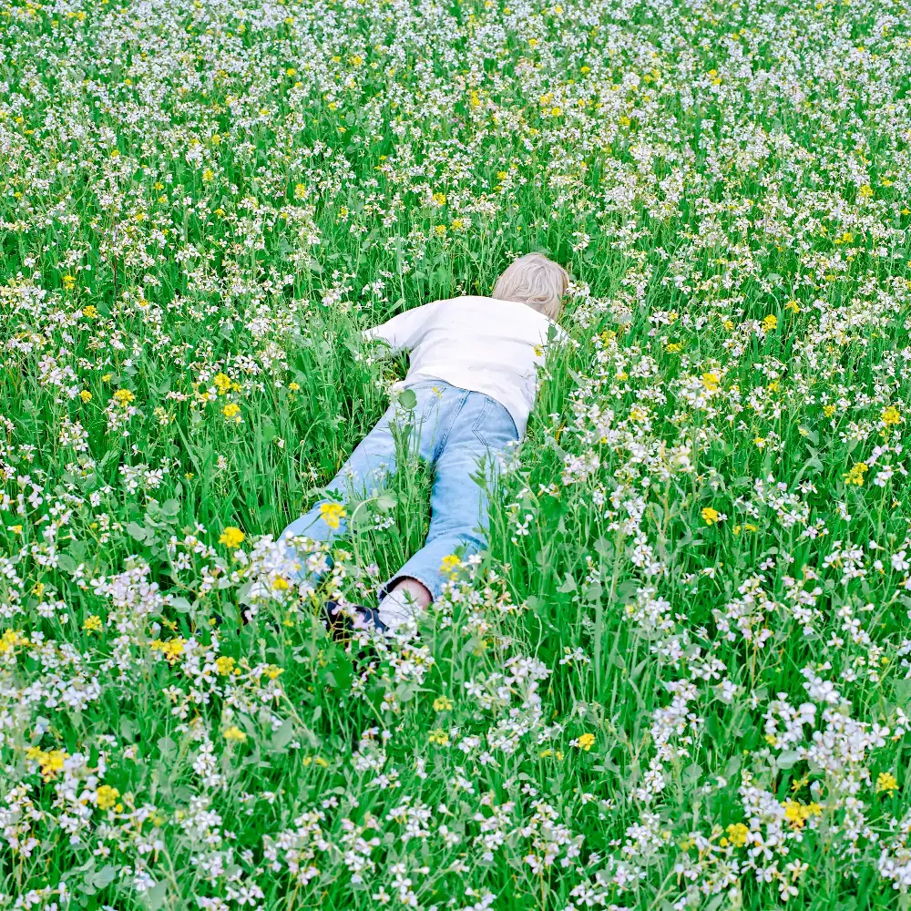

一边在互联网里发疯，一边在星空下找家。
你的绝对精神锚点。内心深处极度渴望从痛苦里爬出来，相信未来会变好，抬头看天就能被治愈，用电子音乐构建一个属于自己的乌托邦。
Vocaloid / 日系电音 / 二次元病娇 / 美式流行 / 独立电子 / 游戏动漫 OST / 中文小众治愈
你听的不是歌，是在虚拟世界中进行高精度的真实情绪演算。

Porter Robinson
无论是 ヨルシカ 充满文学性的隐喻，还是 MyGO 那种掏心掏肺的自白，你拒绝矫揉造作，只求用最自然、精准的表达直击灵魂，完美翻译内心的微妙情绪。
Kpop 与 欧美流行 是你拥抱世界的频道，Porter Robinson 是你留给深夜的自我独白。他们都是你自由切换的情绪背景音。
你能感知到一首歌里最细微的情绪转折，也能在光怪陆离的网络世界和真实平淡的现实生活之间找到自己的锚点。你可能会因为想得太多而感到痛苦，但你始终没有放弃去感受活着的美好（Trying to Feel Alive）。
你极有可能是 ENFJ，你有着深刻的感受力和共情能力，这种特质让你在人际交往中表现出温暖和关怀。你渴望亲密无间的关系，但防卫意识很强，不轻易信任他人。这种矛盾让你在关系中既渴望连接又保持距离，容易陷入情感上的试探和考验。
你是一个极度温柔、强大，又带着一点孤注一掷的浪漫主义者。在喧嚣的现实之外，你亲手搭建了一个纯粹的精神避难所。